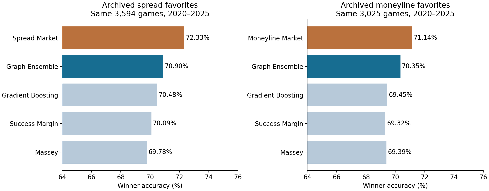
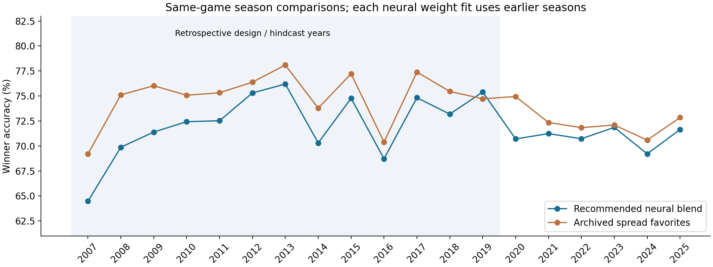
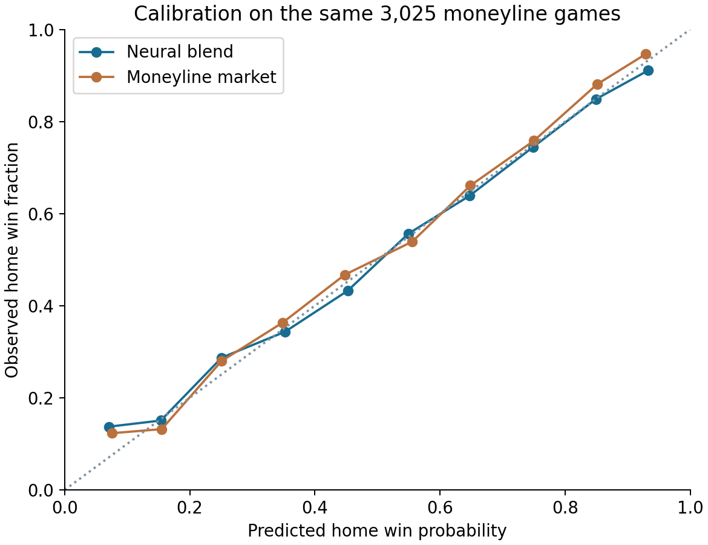

College football: learn from the past, rank from this season
2026 Week 6 snapshot • 2026-10-11 08:30 UTC • Research completed 2026-10-14
3,603 games, 2020–2025
264 configurations + convergence check
2002–2025; 19 annual hindcast seasons
What “preseason agnostic” means
For a game in 2026, the network sees only numeric statistics from games already completed in 2026. Team names, identifiers, conference, division, talent ratings, polls, and preseason estimates are absent from the feature vector. Every team starts equally. Historical examples use the same kind of pregame features, paired with the eventual winner and score margin. The resulting shared weights learn general relationships, such as how much an opponent-adjusted passing advantage predicts a win. Historical team ratings never carry over.
The recommended probability is 0.75 × rich neural probability + 0.25 × graph neural probability, selected on 2018–2019. Each component averages three random seeds. The rich model has 64 numeric features and an 8-neuron hidden layer; the graph model has 152 numeric features and a 16-neuron layer. They learn matchup context while enforcing that swapping teams reverses the prediction. Neutral-site rankings sort each team’s mean predicted win probability against the same complete modeled field.
Betting comparison on identical games
| Benchmark | Games | Neural accuracy | Market accuracy | Neural minus market | 95% season-bootstrap interval | Neural log loss | Market log loss |
|---|---|---|---|---|---|---|---|
| Spread favorites | 3594 | 70.90% | 72.33% | -1.43 points | -2.51 to -0.73 points | 0.5611 | 0.5388 |
| Moneyline favorites | 3025 | 70.35% | 71.14% | -0.79 points | -1.27 to -0.34 points | 0.5710 | 0.5521 |
Spread and moneyline coverage differ; their accuracies cannot be compared as if they came from one cohort. Moneylines are paired within each sportsbook, converted to probabilities, de-vigged, then aggregated across books. Spread favorites use the spread sign; spread probabilities use a design-period logistic conversion. Neutral-site and moved-game home/away reversals are reconciled against the schedule.
These are archived quotes, with no reliable quote-capture timestamp. They cannot be certified as opening or closing prices or as available at the model’s Monday forecast cutoff. This is a predictive benchmark, not a profitability test. Five or six season blocks also limit the precision of the bootstrap intervals. The later seasons were already inspected in this repository’s earlier work and across these rounds, so they are development evidence, not an untouched holdout.

How much experimentation was actually done
| Experiment | Configurations | Fits / families | What changed |
|---|---|---|---|
| Classical methods | 151 | 22 families | Equal starts; margins, wins, graphs, EPA, success, recency, robust fits |
| Neural round 1 | 64 | 192 network fits | 28 features; rank and matchup nets; width, ridge, margin auxiliary loss |
| Neural round 2 | 96 | 288 network fits | 64 features; focal loss, four-year training decay, regularization |
| Neural round 3 | 32 | 96 network fits | 152 current-season neighbor and two-hop graph features |
| Neural round 4 | 72 | 216 network fits | Past market probabilities as supplemental labels; no live-price input |
| Convergence check | 1 | 3 additional fits | 1500-iteration budget; all three converged, validation got worse |
There were 240 additional annual network fits, for 1,035 saved experimental and annual fits in total. Logistic regression, gradient boosting, and extremely randomized trees provide supervised non-neural comparisons. Architecture and blend choices use the designated older validation years. Annual weights and scales use only seasons earlier than the forecast season.
Round 1 trained on 2002–2013 and selected on 2014–2019. Later rounds trained on 2006–2017 and selected on 2018–2019. We reused these validation years while exploring ideas, so validation improvements themselves may reflect search overfitting. Results before 2020 are retrospective hindcasts because the architecture was chosen with later design data. All 2020–2025 comparisons remain development results. A future prospective season is required to establish a durable market edge.
The market-supervised rank network achieved 74.18% design validation accuracy. Giving it a larger optimization budget made all three seeds converge but reduced validation accuracy to 73.67%. Annual refits of that approach achieved 70.39% on 2020–2025. Blending it into the recommended network did not improve validation, so the selected market-supervised weight is zero. More training did not recover information absent from the inputs.
2026 rankings through completed Week 6 games
The default is the recommended neural blend. Switch methods to compare every selected approach, or inspect every experimental configuration. Rankings cover 138 FBS teams; the common reference field also includes FCS teams. Strength models use 748 completed modeled games. Lower-division games outside this modeled field are excluded. The spread-implied list fits 448 archived priced games and includes market expectations, so it is a benchmark rather than a season-only model.
| Rank | Team | Score (method-specific scale) |
|---|
Download 791 future-game forecasts from this snapshot. Scores across different ranking methods use different scales. Neural scores are mean neutral-site win probabilities across all 266 modeled teams, including the self matchup. These are predictive rankings, not a measure of earned accomplishments.
Every selected method: results and Week 6 leaders
| Method | Games | 2020–25 accuracy | Log loss | Week 6 top five | How it works |
|---|---|---|---|---|---|
| Win Percentage | 3603 | 67.39% | 0.6079 | Georgia, Indiana, Notre Dame, James Madison, UCLA | Win fraction, shrunk equally toward .500. No schedule adjustment. |
| Net Wins | 3603 | 67.32% | 0.6077 | Georgia, Indiana, Notre Dame, James Madison, UCLA | Wins minus losses. No schedule adjustment. |
| Colley | 3603 | 68.05% | 0.6012 | Notre Dame, Indiana, Georgia, Texas Tech, Alabama | Solve the schedule Laplacian using wins and losses, with an equal .500 start. |
| Pythagorean | 3603 | 69.30% | 0.5915 | Miami, New Mexico, Notre Dame, Indiana, Georgia | Points scored and allowed predict expected win fraction; tune the exponent. |
| Bradley Terry | 3603 | 67.50% | 0.6028 | Miami, Georgia, Notre Dame, UCLA, Texas Tech | Fit pairwise win probabilities with equal ridge shrinkage and venue adjustment. |
| Massey | 3603 | 69.75% | 0.5760 | Alabama, Notre Dame, Miami, Georgia, Ohio State | Least-squares team strengths explain score margins, opponent quality, and venue. |
| Capped Margin | 3603 | 70.00% | 0.5722 | Alabama, Notre Dame, Miami, Georgia, Ohio State | Massey fit with capped margins to reduce the influence of blowouts. |
| Robust Margin | 3603 | 69.53% | 0.5733 | Alabama, Notre Dame, Miami, Georgia, Ohio State | Huber-loss margin fit reduces influence from unusual games. |
| Recency Margin | 3603 | 69.53% | 0.5749 | Alabama, Notre Dame, Miami, Georgia, Indiana | Capped margin fit downweights older games within this season. |
| Win Springs | 3603 | 66.78% | 0.6158 | UCLA, Notre Dame, Miami, Alabama, Texas Tech | Schedule-adjusted least squares using only the sign of each result. |
| Margin Springs | 3603 | 69.08% | 0.5856 | Alabama, UCLA, Notre Dame, Miami, Boise State | Win springs weighted by margin; large wins pull strengths farther apart. |
| Elo | 3603 | 68.36% | 0.5894 | Miami, Notre Dame, UCLA, James Madison, Georgia | Sequential game updates from equal zero ratings; tune update speed and margin scaling. |
| Offense Defense Score | 3603 | 69.66% | 0.5725 | Alabama, Notre Dame, Miami, Georgia, Ohio State | Separate schedule-adjusted scoring offense and defense; rank their sum. |
| Pagerank | 3603 | 66.47% | 0.6159 | Georgia, Texas, Alabama, Indiana, Oklahoma | A loss-to-winner graph passes credit to teams that beat strong opponents. |
| Keener | 3603 | 69.11% | 0.6021 | Alabama, Notre Dame, Texas, Georgia, Miami | Positive eigenvector of nonlinear score shares, normalized by games played. |
| Lrmc | 3603 | 69.22% | 0.5874 | Alabama, Georgia, Notre Dame, Miami, Ohio State | A Markov chain with margin-based game transitions and uniform teleportation. |
| EPA Units | 3603 | 67.44% | 0.5951 | Notre Dame, Miami, LSU, Georgia, Indiana | Fit schedule-adjusted offensive and defensive EPA per play, with score fallback. |
| Success Units | 3603 | 67.39% | 0.5958 | Notre Dame, Georgia, Ohio State, LSU, Houston | Fit schedule-adjusted offensive and defensive success rates, with score fallback. |
| EPA Margin | 3603 | 69.86% | 0.5712 | Miami, Notre Dame, Alabama, Georgia, Ohio State | Blend adjusted EPA strength and schedule-adjusted score margins. |
| Success Margin | 3603 | 70.05% | 0.5682 | Notre Dame, Miami, Alabama, Georgia, Ohio State | Blend adjusted success-rate strength and schedule-adjusted score margins. |
| EPA Success | 3603 | 69.44% | 0.5815 | Notre Dame, Georgia, LSU, Miami, Alabama | Blend adjusted EPA and success-rate strength. |
| Evidence Blend | 3603 | 70.30% | 0.5715 | Miami, Notre Dame, Georgia, Alabama, Ohio State | Blend EPA, success, optional special teams, and margin according to sample size and signal agreement. |
| Neural Annual | 3603 | 70.19% | 0.5639 | Notre Dame, Alabama, Miami, Georgia, Ohio State | Shared team-strength network on 28 statistics; weights refit on earlier seasons. |
| Logistic Features | 3603 | 70.36% | 0.5631 | Alabama, Notre Dame, Georgia, Miami, Ohio State | Supervised logistic regression on numeric team features and venue. |
| Neural Ensemble | 3603 | 70.30% | 0.5633 | Alabama, Notre Dame, Miami, Georgia, Ohio State | Original shared network blended equally with a feature logistic regression. |
| Gradient Boosting | 3603 | 70.44% | 0.5653 | Notre Dame, Miami, Alabama, Georgia, Ohio State | Symmetrized histogram gradient-boosted trees on numeric matchup features. |
| Extra Trees | 3603 | 69.97% | 0.5675 | Miami, Notre Dame, Alabama, Georgia, Ohio State | Symmetrized extremely randomized trees on numeric matchup features. |
| Rich Neural | 3603 | 70.86% | 0.5618 | Notre Dame, Miami, Georgia, Alabama, Indiana | Three-seed 8-neuron antisymmetric matchup network with 64 play and score features. |
| Rich Ensemble | 3603 | 70.86% | 0.5618 | Notre Dame, Miami, Georgia, Alabama, Indiana | Validation chose 100% of the rich network; this is an alias, not another learner. |
| Graph Neural | 3603 | 70.64% | 0.5651 | Notre Dame, Alabama, Miami, Georgia, Indiana | Three-seed 16-neuron antisymmetric network with 152 current-season graph features. |
| Graph Ensemble | 3603 | 70.86% | 0.5617 | Notre Dame, Miami, Georgia, Alabama, Indiana | Recommended: 75% rich-network and 25% opponent-graph-network probabilities. |
| Market Distilled Neural | 3603 | 70.39% | 0.5621 | Notre Dame, Georgia, Alabama, Miami, Indiana | 16-neuron shared team-strength network trained with past outcomes and past market probabilities as labels; prices are absent at inference. |
| Market Distilled Ensemble | 3603 | 70.86% | 0.5617 | Notre Dame, Miami, Georgia, Alabama, Indiana | Validation chose zero market-distilled weight; this is the recommended graph blend again. |
| Spread Implied Market | — | — | — | Notre Dame, Ohio State, Indiana, Miami, Texas | An inferred ranking fitted to archived 2026 spreads through Week 6; not a published sportsbook poll. |
All non-market methods in this table have the same 3,603-game weekly evaluation cohort. The static frozen network is reported separately in the downloadable metrics. Rich ensemble and market-distilled ensemble are aliases selected by zero/one blend weights, not additional independent successes. Complete accuracy, Brier score, and log-loss CSV; classical margin errors are also in the detailed JSON.
Freezing ratings after Week 6
The historical Week 6 experiment fixes features for the remainder of each season. It therefore tests the usefulness of the specific snapshot you asked for, without updating strengths after later results. The forecasts below share the same 2,703 future FBS games in 2020–2025; venue remains known.
| Method | Games | Winner accuracy | Brier | Log loss |
|---|---|---|---|---|
| Graph Ensemble | 2703 | 68.87% | 0.2021 | 0.5882 |
| Rich Neural | 2703 | 68.68% | 0.2020 | 0.5880 |
| Neural Annual | 2703 | 69.02% | 0.2026 | 0.5895 |
| Massey | 2703 | 67.87% | 0.2073 | 0.6000 |
| Success Margin | 2703 | 68.24% | 0.2036 | 0.5912 |
| Gradient Boosting | 2703 | 68.72% | 0.2028 | 0.5900 |
Archived prices for later games may incorporate results, injuries, and information obtained after Week 6. Their comparison against a frozen Week 6 model is explicitly an unequal-information benchmark; the weekly comparisons above are the main market test.
Past seasons
Each row below compares the recommended neural blend and the market on identical games in that season. The network’s weight fit uses earlier seasons only, although architecture selection used 2018–2019. No 2020 moneylines were available in the archive.

| year | market | games | neural_accuracy | market_accuracy | difference |
|---|---|---|---|---|---|
| 2007 | moneyline_market | 348 | 64.37% | 68.68% | -4.31 points |
| 2007 | spread_market | 349 | 64.47% | 69.20% | -4.73 points |
| 2008 | moneyline_market | 229 | 69.87% | 74.67% | -4.80 points |
| 2008 | spread_market | 229 | 69.87% | 75.11% | -5.24 points |
| 2009 | moneyline_market | 364 | 71.15% | 76.24% | -5.08 points |
| 2009 | spread_market | 367 | 71.39% | 76.02% | -4.63 points |
| 2010 | moneyline_market | 358 | 72.35% | 74.86% | -2.51 points |
| 2010 | spread_market | 359 | 72.42% | 75.07% | -2.65 points |
| 2011 | moneyline_market | 393 | 72.52% | 75.19% | -2.67 points |
| 2011 | spread_market | 393 | 72.52% | 75.32% | -2.80 points |
| 2012 | moneyline_market | 417 | 75.30% | 76.62% | -1.32 points |
| 2012 | spread_market | 417 | 75.30% | 76.38% | -1.08 points |
| 2013 | moneyline_market | 420 | 76.19% | 78.10% | -1.90 points |
| 2013 | spread_market | 420 | 76.19% | 78.10% | -1.90 points |
| 2014 | moneyline_market | 431 | 70.30% | 73.55% | -3.25 points |
| 2014 | spread_market | 431 | 70.30% | 73.78% | -3.48 points |
| 2015 | moneyline_market | 428 | 74.77% | 76.99% | -2.22 points |
| 2015 | spread_market | 428 | 74.77% | 77.22% | -2.45 points |
| 2016 | moneyline_market | 422 | 68.72% | 70.38% | -1.66 points |
| 2016 | spread_market | 422 | 68.72% | 70.38% | -1.66 points |
| 2017 | moneyline_market | 427 | 74.71% | 77.40% | -2.69 points |
| 2017 | spread_market | 429 | 74.83% | 77.39% | -2.56 points |
| 2018 | moneyline_market | 440 | 73.18% | 75.00% | -1.82 points |
| 2018 | spread_market | 440 | 73.18% | 75.45% | -2.27 points |
| 2019 | moneyline_market | 439 | 75.40% | 74.60% | +0.80 points |
| 2019 | spread_market | 439 | 75.40% | 74.72% | +0.68 points |
| 2020 | spread_market | 471 | 70.70% | 74.95% | -4.25 points |
| 2021 | moneyline_market | 550 | 70.18% | 70.91% | -0.73 points |
| 2021 | spread_market | 584 | 71.23% | 72.35% | -1.11 points |
| 2022 | moneyline_market | 544 | 69.85% | 70.04% | -0.18 points |
| 2022 | spread_market | 584 | 70.72% | 71.83% | -1.11 points |
| 2023 | moneyline_market | 631 | 71.63% | 71.95% | -0.32 points |
| 2023 | spread_market | 636 | 71.86% | 72.09% | -0.24 points |
| 2024 | moneyline_market | 650 | 68.92% | 70.62% | -1.69 points |
| 2024 | spread_market | 656 | 69.21% | 70.58% | -1.37 points |
| 2025 | moneyline_market | 650 | 71.08% | 72.00% | -0.92 points |
| 2025 | spread_market | 663 | 71.64% | 72.85% | -1.21 points |
The selected blend beats both archived favorite benchmarks by a small point estimate in 2019, a validation season. It does not beat either market benchmark in any matched 2020–2025 season. Matched annual CSV; neural per-season probability metrics; all classical per-season metrics.
CFP committee comparison
The College Football Playoff publishes committee rankings, not a public numerical winner-prediction algorithm. The benchmark picks the higher-ranked team using only a list published before kickoff. An unranked team counts as rank 26, and games between two unranked teams are omitted. The neural predictions continue to use their earlier Monday snapshot.
| Games | N | Neural accuracy | CFP higher-rank pick | Difference | 95% interval |
|---|---|---|---|---|---|
| At least one team ranked | 538 | 76.02% | 73.79% | +2.23 points | +0.23 to +3.77 points |
| Both teams ranked | 140 | 70.00% | 58.57% | +11.43 points | +6.09 to +18.25 points |
The selected neural blend outperforms the CFP rank-order pick in these 2020–2025 development comparisons. The committee ranks accomplishments for selection; that is a different objective from predicting winners. The first 2026 CFP list is scheduled for November 3, so an official Week 6 CFP ranking does not exist. Sources: 2026 schedule and the official yearly tables linked in the saved recent and earlier archives. Verified transcription corrections are recorded alongside those tables.
What the negative market result tells us
Historical supervised learning is already in use. It improves the score-only baseline, but current-season team aggregates omit some information sportsbooks can use: injuries, expected availability, lineup changes, roster turnover, and matchup details not captured by the available plays. Sparse early-season schedules and limited FCS play coverage also constrain inference. More parameters or more optimization cannot guarantee access to those missing signals.
The next informative experiment is richer, timestamped current-season availability and play context, followed by a prospectively frozen evaluation protocol against timestamped prices. The existing source archive’s EPA and success labels may have been retrospectively regenerated with shared historical models; their underlying fitting vintage is not guaranteed. This study restricts game and feature dates but does not claim a full reconstruction of what a bettor could download at the time.
This search covers many established method families and supervised baselines. It does not cover every published algorithm or the private formulas of sportsbooks, FPI, or SP+. The evidence supports this particular implementation’s comparisons, not a claim of outperforming all known algorithms or of a world-first invention.
Audit trail and exports
All inputs, source hashes, model weights, design selections, and game-level predictions are saved. The raw play archive remains a download cache; compact game aggregates are included for reproduction. Charts use fixed saved probabilities.
- Classical and basic neural game probabilities, rich, graph, market-supervised
- All 151 statistical rankings, all 64 basic neural rankings, all 200 additional neural rankings
- Statistical exploratory audit, basic neural exploratory audit, additional neural exploratory audit. These post-selection grids are exploratory; their best later-season configuration is not an unbiased winning-model selection.
- Schedule and play provenance, rich play provenance, market provenance, 2026 spread source
